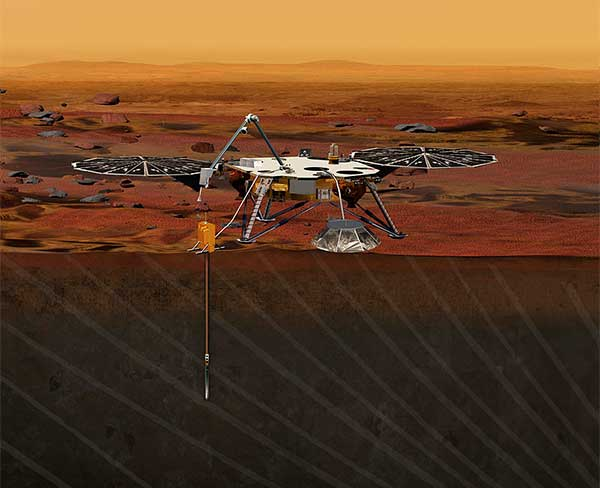

MarsOdyssey
Mars Odyssey es una sonda espacial lanzada el . Su objetivo fue el estudio del
clima y la realización de un mapa de la superficie de Marte. También se utiliza como enlace de comunicaciones
con los robots que están en la tierra. La inserción orbital tuvo lugar el
Utopía marciana
Marte ¿Un lugar para la vida?

Exploaración de Marte
Misiones a Marte de la NASA siglo XXI


Spirit
Su designación oficial es MER-A. Es el primero de los dos robots que forma parte del Programa de Exploración de Marte de la NASA. La nave llego con éxito al planeta Marte el y finalizó su actividad en , momento en el que dejó de enviar comunicaciones.
Su designación oficial es MER-A. Es el primero de los dos robots que forma parte del Programa de Exploración de Marte de la NASA. La nave llego con éxito al planeta Marte el y finalizó su actividad en , momento en el que dejó de enviar comunicaciones.

Opportunity
MER-B (Opportunity) fue un robot róver en el planeta Marte activo desde el hasta el . Fue el segundo de los dos vehículos robóticos de la NASA que aterrizaron con éxito en el planeta Marte.
MER-B (Opportunity) fue un robot róver en el planeta Marte activo desde el hasta el . Fue el segundo de los dos vehículos robóticos de la NASA que aterrizaron con éxito en el planeta Marte.

Mars Reconnaissance Orbiter
Nave espacial multipropósito, lanzada el para avançar en el conocimiento humano de Marte a través de la observación detallada, con la finalidad de examinar zonas potenciales de aterrizaje para futuras misiones en la superficie. El comenzó su inserción en la órbita marciana.
Nave espacial multipropósito, lanzada el para avançar en el conocimiento humano de Marte a través de la observación detallada, con la finalidad de examinar zonas potenciales de aterrizaje para futuras misiones en la superficie. El comenzó su inserción en la órbita marciana.

Phoenix Mars Lander
El programa científico de esta sonda lanzada el y que aterrizó en Marte el , es un esfuerzo conjunto entre universidades de los Estados Unidos, Canadá, Suiza, Dinamarca y Alemania. Su objetivo primario fue llegar a una región próxima al Polo 3 Norte marciano, desplegar su brazo robótico y hacer prospecciones a diferentes profundidades para examinar el subsuelo.
El programa científico de esta sonda lanzada el y que aterrizó en Marte el , es un esfuerzo conjunto entre universidades de los Estados Unidos, Canadá, Suiza, Dinamarca y Alemania. Su objetivo primario fue llegar a una región próxima al Polo 3 Norte marciano, desplegar su brazo robótico y hacer prospecciones a diferentes profundidades para examinar el subsuelo.

Dawn
La finalidad de la sonda Dawn fue examinar el planeta enano Ceres y el asteroide Vesta, localitzados en el cinturón de asteroides situado entre Marte y Júpiter. Fue lanzada el , exploró Vesta entre 2011 y 2012 y orbitó Ceres desde 2015 hasta 2018.
La finalidad de la sonda Dawn fue examinar el planeta enano Ceres y el asteroide Vesta, localitzados en el cinturón de asteroides situado entre Marte y Júpiter. Fue lanzada el , exploró Vesta entre 2011 y 2012 y orbitó Ceres desde 2015 hasta 2018.

Curiosity
La Mars Science Laboratory, conocida como Curiosity, es una misión espacial que incluye un astromóvil de exploración marciana. Fue lanzada el y aterrizó en Marte, en el cráter Gale el . Su misión se centra en situar sobre la superficie marciana un vehículo explorador (tipo róver) con instrumentos científicos avanzados que le permitirán hacer fotografías, tomar muestras del suelo y polvo rocoso marciano para su análisis.
La Mars Science Laboratory, conocida como Curiosity, es una misión espacial que incluye un astromóvil de exploración marciana. Fue lanzada el y aterrizó en Marte, en el cráter Gale el . Su misión se centra en situar sobre la superficie marciana un vehículo explorador (tipo róver) con instrumentos científicos avanzados que le permitirán hacer fotografías, tomar muestras del suelo y polvo rocoso marciano para su análisis.

Insight
Es una misión de la NASA que tiene por objectivo situar un robot fijo de aterrizaje equipado con instrumentos de alta tecnología que permitirá estudiar el "pulso" del interior y del subsuelo, la "temperatura" y los "reflejos" para estudiar la evolución geológica precoz del planeta Marte. Fue lanzada el y aterrizó el .
Es una misión de la NASA que tiene por objectivo situar un robot fijo de aterrizaje equipado con instrumentos de alta tecnología que permitirá estudiar el "pulso" del interior y del subsuelo, la "temperatura" y los "reflejos" para estudiar la evolución geológica precoz del planeta Marte. Fue lanzada el y aterrizó el .

Mars 2020
El lanzamiento fue realizado el , y aterrizó en Marte el . Incluye un róver y un pequeño helicóptero: el helicóptero explorador Ingenuity, cuya función es planificar la mejor ruta para el desplazamiento del róver Perseverance.
El lanzamiento fue realizado el , y aterrizó en Marte el . Incluye un róver y un pequeño helicóptero: el helicóptero explorador Ingenuity, cuya función es planificar la mejor ruta para el desplazamiento del róver Perseverance.